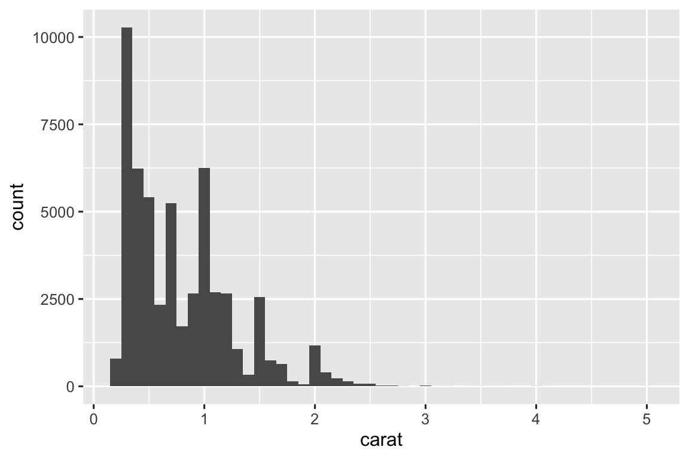
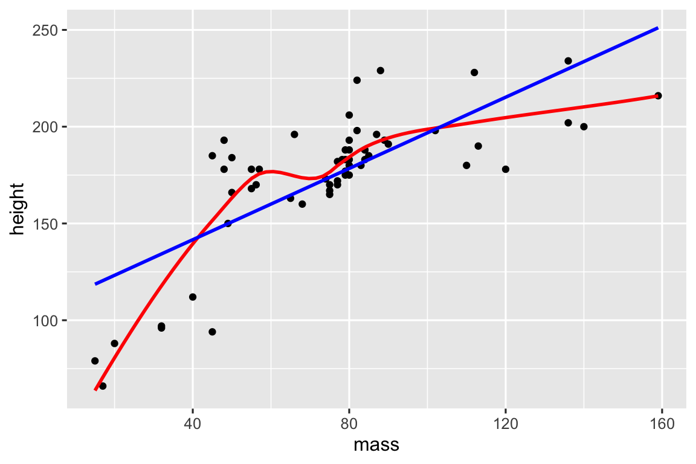
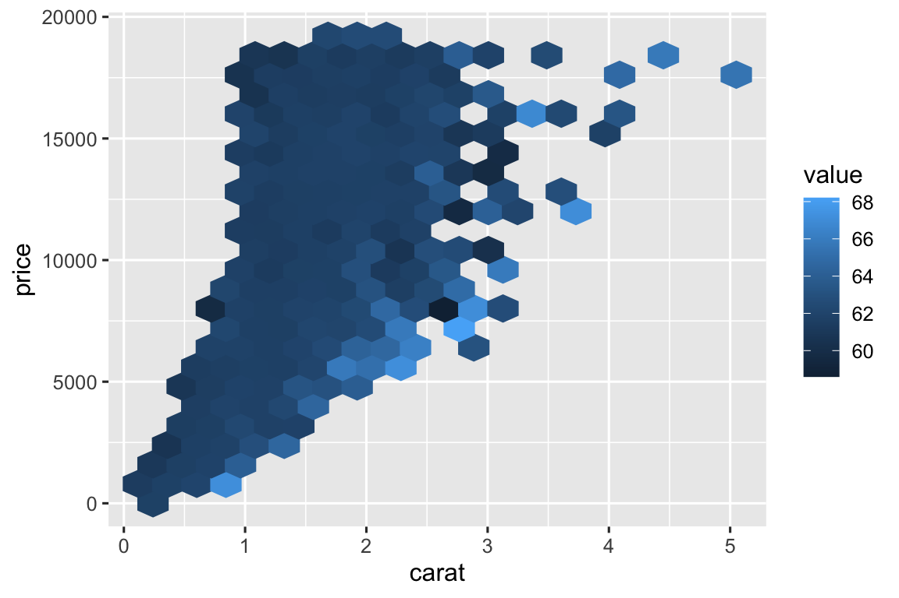
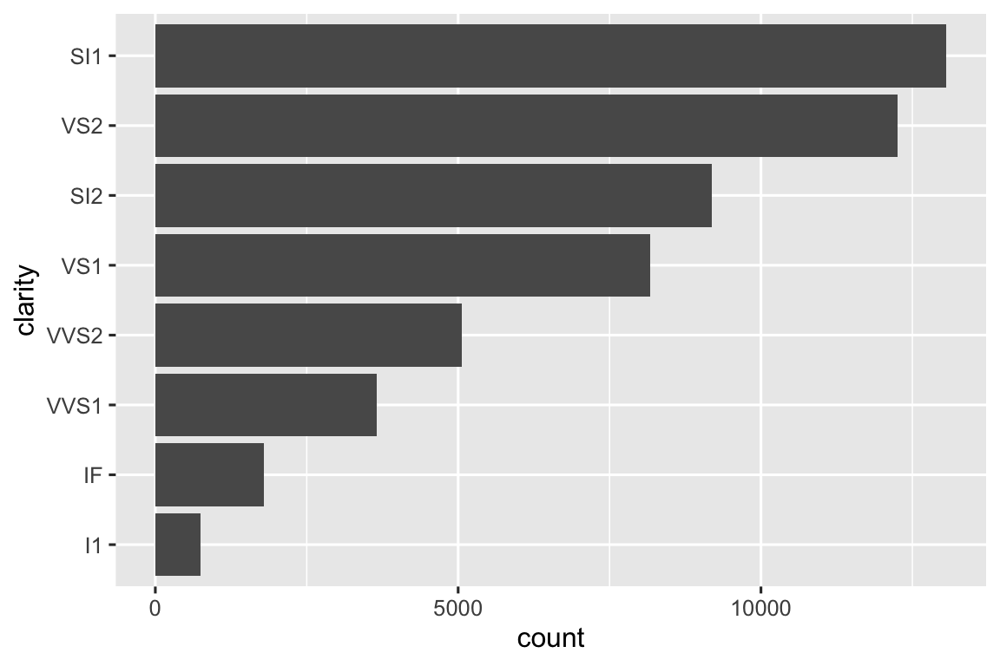
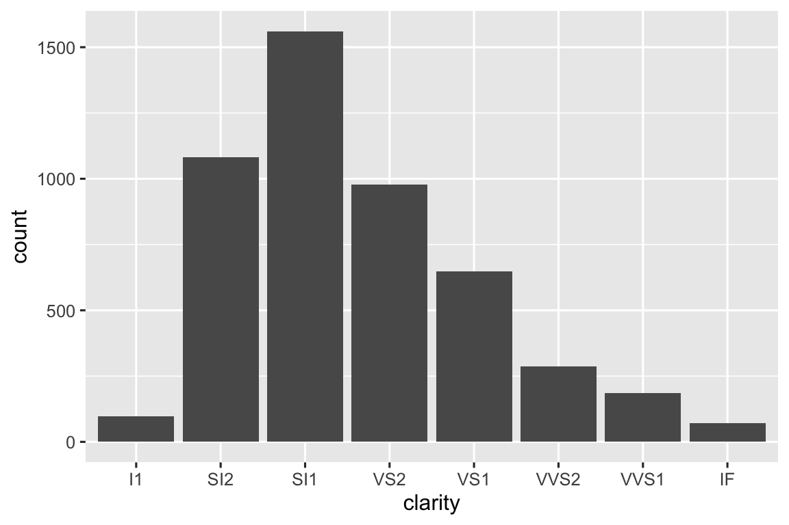
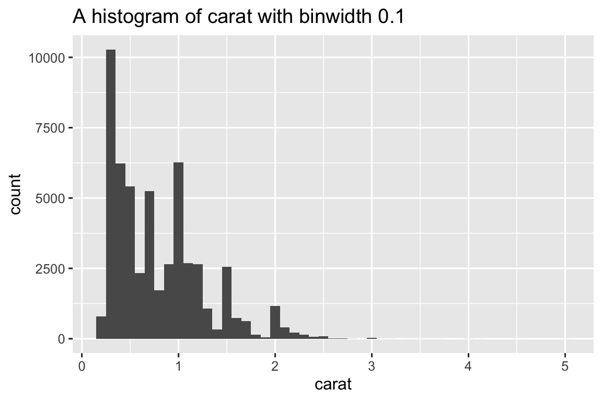

library(tidyverse)
library(nycflights13)25 函数
25.1 引言
数据科学家提高影响力的一种最佳方式就是编写函数。函 数允许你以一种更强大和通用的方式自动化常见任务，这比复制粘贴更为高效。与 复制粘贴相比，编写函数具有四大优势：
- 可以给函数起一个富有表现力的名字，使你的代码更容易理解。
- 随着需求的变化，你只需要在一个地方更新代码，而不是在多个地方。
- 消除了在复制粘贴时可能发生的偶然错误 (例如在一个地方更新了变量名，但在另一个地方没有) 。
- 使得项目之间的工作重用变得更加容易，随着时间推移提高了生产效率。
一个经验法则是：当你复制粘贴一块代码超过两次时 (即现在有三份相同的代码) 就应该考虑编写一个函数。在 本章中，你将学习三种有用的函数类型：
- 向量函数 接受一个或多个向量作为输入，并返回一个向量作为输出。
- 数据框函数 接受一个数据框作为输入，并返回一个数据框作为输出。
- 绘图函数 接受一个数据框作为输入，并返回一个图形作为输出。
每个部分都包含了许多示例，以帮助你概括你看到的模式。没 有Twitter上朋友们的帮助，这些例子是不可能实现的，我们鼓励你点击评论中的链接查看原始灵感来源。你 可能还想阅读关于general functions和plotting functions的原始激励推文，以查看更多的函数示例。
25.1.1 必要条件
我们将整理来自tidyverse的各种函数。同 时，我们还将使用nycflights13数据集作为熟悉的数据源来使用我们的函数。
25.2 向量函数
我们从向量函数开始:接受一个或多个向量并返回一个向量结果的函数。例 如，请看下面的代码。它 是做什么的?
df <- tibble(
a = rnorm(5),
b = rnorm(5),
c = rnorm(5),
d = rnorm(5),
)
df |> mutate(
a = (a - min(a, na.rm = TRUE)) /
(max(a, na.rm = TRUE) - min(a, na.rm = TRUE)),
b = (b - min(b, na.rm = TRUE)) /
(max(b, na.rm = TRUE) - min(b, na.rm = TRUE)),
c = (c - min(c, na.rm = TRUE)) /
(max(c, na.rm = TRUE) - min(c, na.rm = TRUE)),
d = (d - min(d, na.rm = TRUE)) /
(max(d, na.rm = TRUE) - min(d, na.rm = TRUE)),
)
#> # A tibble: 5 × 4
#> a b c d
#> <dbl> <dbl> <dbl> <dbl>
#> 1 0.339 1 0.291 0
#> 2 0.880 0 0.611 0.557
#> 3 0 0.530 1 0.752
#> 4 0.795 0.531 0 1
#> 5 1 0.518 0.580 0.394你可能能猜出这段代码将每一列重新缩放，使其范围在0到1之间。但 你有没有发现错误？当 Hadley写这段代码时，他在复制粘贴时犯了一个错误，忘记把字母a改成b。防 止这种错误是学习如何编写函数的一个非常好的理由。
25.2.1 编写函数
要编写一个函数，你首先需要分析你的重复代码，以弄清楚哪些部分是固定的，哪些部分是变化的。如 果我们把上面的代码从mutate()中提取出来，因为每次重复现在都在一行上，所以更容易看出模式：
(a - min(a, na.rm = TRUE)) / (max(a, na.rm = TRUE) - min(a, na.rm = TRUE))
(b - min(b, na.rm = TRUE)) / (max(b, na.rm = TRUE) - min(b, na.rm = TRUE))
(c - min(c, na.rm = TRUE)) / (max(c, na.rm = TRUE) - min(c, na.rm = TRUE))
(d - min(d, na.rm = TRUE)) / (max(d, na.rm = TRUE) - min(d, na.rm = TRUE)) 为了更清楚一点，我们可以用█来替换变化的位:
(█ - min(█, na.rm = TRUE)) / (max(█, na.rm = TRUE) - min(█, na.rm = TRUE))要将其转换为一个函数，你需要三样东西：
- 一个名称。这里我们将使用
rescale01，因为这个函数将向量重新缩放到0和1之间。 - 参数。参数是在函数调用中变化的东西，上面的分析告诉我们只有一个，将它命名为
x，因为这是数值向量的常规名称。 - 函数体。函数体是在所有调用中重复的代码。
然后，你按照下面的模板来创建一个函数：
name <- function(arguments) {
body
}针对这种情况，其结果是：
rescale01 <- function(x) {
(x - min(x, na.rm = TRUE)) / (max(x, na.rm = TRUE) - min(x, na.rm = TRUE))
}此时，你可能会用几个简单的输入进行测试，以确保你已经正确地捕捉到了逻辑：
rescale01(c(-10, 0, 10))
#> [1] 0.0 0.5 1.0
rescale01(c(1, 2, 3, NA, 5))
#> [1] 0.00 0.25 0.50 NA 1.00然后你可以将mutate()的调用重写为:
df |> mutate(
a = rescale01(a),
b = rescale01(b),
c = rescale01(c),
d = rescale01(d),
)
#> # A tibble: 5 × 4
#> a b c d
#> <dbl> <dbl> <dbl> <dbl>
#> 1 0.339 1 0.291 0
#> 2 0.880 0 0.611 0.557
#> 3 0 0.530 1 0.752
#> 4 0.795 0.531 0 1
#> 5 1 0.518 0.580 0.394( 章节 26, 你将学习如何使用across()来进一步减少重复，这样你只需要写df |> mutate(across(a:d, rescale01))就可以了).
25.2.2 改进函数
你可能注意到rescale01()函数做了一些不必要的工作，们不需要计算两次min()和一次max()，相反，我们可以用range()函数在一步中同时计算出最小值和最大值。
rescale01 <- function(x) {
rng <- range(x, na.rm = TRUE)
(x - rng[1]) / (rng[2] - rng[1])
}或者，你可能试图在包含无穷大值的向量上尝试这个函数：
x <- c(1:10, Inf)
rescale01(x)
#> [1] 0 0 0 0 0 0 0 0 0 0 NaN这个结果不是特别有用，所以我们可以让range()函数忽略无穷大值：
rescale01 <- function(x) {
rng <- range(x, na.rm = TRUE, finite = TRUE)
(x - rng[1]) / (rng[2] - rng[1])
}
rescale01(x)
#> [1] 0.0000000 0.1111111 0.2222222 0.3333333 0.4444444 0.5555556 0.6666667
#> [8] 0.7777778 0.8888889 1.0000000 Inf这些改变说明了函数的一个重要好处：因为我们把重复的代码移到了函数中，所以我们只需要在一个地方做出改变。
25.2.3 Mutate 函数
既然你已经掌握了函数的基本概念，让我们来看一系列的例子。我 们首先从“mutate”函数开始，也就是那些在mutate()和filter()内部工作得很好的函数，因为它们返回的输出长度与输入相同。
让我们从rescale01()函数的一个简单变体开始。也 许你想计算Z分数，即将一个向量重新缩放到均值为0，标准差为1：
z_score <- function(x) {
(x - mean(x, na.rm = TRUE)) / sd(x, na.rm = TRUE)
}或者，你可能想要封装一个简单的case_when()，并给它一个有用的名字。例 如，这个clamp()函数确保向量的所有值都位于最小值和最大值之间：
clamp <- function(x, min, max) {
case_when(
x < min ~ min,
x > max ~ max,
.default = x
)
}
clamp(1:10, min = 3, max = 7)
#> [1] 3 3 3 4 5 6 7 7 7 7当然，函数不仅仅需要处理数值变量，你可能需要进行一些重复的字符串操作。比 如，可能需要将字符串的第一个字符转换为大写：
first_upper <- function(x) {
str_sub(x, 1, 1) <- str_to_upper(str_sub(x, 1, 1))
x
}
first_upper("hello")
#> [1] "Hello"或者，你可能想在将字符串转换为数字之前，去掉其中的百分号、逗号和美元符号：
# https://twitter.com/NVlabormarket/status/1571939851922198530
clean_number <- function(x) {
is_pct <- str_detect(x, "%")
num <- x |>
str_remove_all("%") |>
str_remove_all(",") |>
str_remove_all(fixed("$")) |>
as.numeric()
if_else(is_pct, num / 100, num)
}
clean_number("$12,300")
#> [1] 12300
clean_number("45%")
#> [1] 0.45有时，你的函数将专门用于某个数据分析步骤。例 如，如果你有一堆变量，它们将缺失值记录为997、998或999，你可能想编写一个函数来将这些值替换为NA：
fix_na <- function(x) {
if_else(x %in% c(997, 998, 999), NA, x)
}我们主要关注只接受单个向量的例子，因为我们认为它们是最常见的。但 是，你的函数没有理由不能接受多个向量输入。
25.2.4 汇总函数
另一类重要的向量函数是汇总函数 (summary functions)，这些函数返回一个单一的值，用于summarize()函数中。有 时，这仅仅是设置一两个默认参数的问题：
commas <- function(x) {
str_flatten(x, collapse = ", ", last = " and ")
}
commas(c("cat", "dog", "pigeon"))
#> [1] "cat, dog and pigeon"或者，你可能想封装一个简单的计算，比如变异系数，它是通过标准差除以均数来计算的：
cv <- function(x, na.rm = FALSE) {
sd(x, na.rm = na.rm) / mean(x, na.rm = na.rm)
}
cv(runif(100, min = 0, max = 50))
#> [1] 0.5196276
cv(runif(100, min = 0, max = 500))
#> [1] 0.5652554或者你可能只是想通过给它一个易于记忆的名字来让常见的模式更容易被记住：
# https://twitter.com/gbganalyst/status/1571619641390252033
n_missing <- function(x) {
sum(is.na(x))
} 你还可以编写具有多个向量输入的函数。例 如，你可能想要计算平均绝对百分比误差来帮助你比较模型预测值与实际值：
# https://twitter.com/neilgcurrie/status/1571607727255834625
mape <- function(actual, predicted) {
sum(abs((actual - predicted) / actual)) / length(actual)
}
RStudio
当你开始编写函数时，有两个RStudio的快捷键非常有用：
要查找你已编写的函数的定义，请将光标放在函数名上，然后按F2；
要快速跳转到某个函数，请按Ctrl + . 打开模糊的文件和函数查找器，并输入你的函数名的前几个字母。你 还可以导航到文件、Quarto部分等，这使它成为一个非常方便的导航工具。
25.2.5 练习
练习将以下代码片段转换为函数。考 虑每个函数的作用。你 怎么称呼它？它 需要多少个参数?
mean(is.na(x)) mean(is.na(y)) mean(is.na(z)) x / sum(x, na.rm = TRUE) y / sum(y, na.rm = TRUE) z / sum(z, na.rm = TRUE) round(x / sum(x, na.rm = TRUE) * 100, 1) round(y / sum(y, na.rm = TRUE) * 100, 1) round(z / sum(z, na.rm = TRUE) * 100, 1)在
rescale01()函数的第二个版本中，无穷值保持不变。你 能重写rescale01()函数，使得-Inf被映射到0，而Inf被映射到1吗？给定一个出生日期向量，编写一个函数来计算年龄 (以年为单位)。
编写你自己的函数来计算数值向量的方差和偏度。你 可以在维基百科或其他地方查找这些定义。
编写
both_na()函数，这是一个汇总函数，它接收两个相同长度的向量，并返回两个向量中都有NA值的位置数量。阅读文档来了解以下函数的作用。尽 管它们很短，为什么仍然很有用？
is_directory <- function(x) { file.info(x)$isdir } is_readable <- function(x) { file.access(x, 4) == 0 }
25.3 数据框函数
向量函数对于从dplyr函数中提取重复代码很有用。但 是，你通常会重复这些函数本身，特别是在大型管道中。当 你发现自己多次复制和粘贴多个函数时，你可能会考虑编写一个数据框函数。数 据框函数的工作方式与dplyr函数类似：它们将数据框作为第一个参数，一些额外的参数说明如何处理它，并返回一个数据框或向量。
为了让你编写一个使用dplyr操作函数的函数，我们将首先向你介绍间接引用的问题以及如何通过使用{ }来克服它。掌 握了这些理论之后，我们将向你展示一堆示例来说明你可以用它做什么。
25.3.1 间接引用和整齐评估
当你开始编写使用dplyr函数的函数时，你会很快遇到间接引用 (indirection) 的问题。让 我们用一个非常简单的函数grouped_mean()来说明这个问题。这 个函数的目的是计算按group_var分组后mean_var的均数：
grouped_mean <- function(df, group_var, mean_var) {
df |>
group_by(group_var) |>
summarize(mean(mean_var))
}如果我们尝试使用它，就会得到一个错误:
diamonds |> grouped_mean(cut, carat)
#> Error in `group_by()`:
#> ! Must group by variables found in `.data`.
#> ✖ Column `group_var` is not found.为了使问题更清楚，我们可以使用一个合成的数据框:
df <- tibble(
mean_var = 1,
group_var = "g",
group = 1,
x = 10,
y = 100
)
df |> grouped_mean(group, x)
#> # A tibble: 1 × 2
#> group_var `mean(mean_var)`
#> <chr> <dbl>
#> 1 g 1
df |> grouped_mean(group, y)
#> # A tibble: 1 × 2
#> group_var `mean(mean_var)`
#> <chr> <dbl>
#> 1 g 1无论我们如何调用grouped_mean()函数，它总是执行df |> group_by(group_var) |> summarize(mean(mean_var))，而不是df |> group_by(group) |> summarize(mean(x))或df |> group_by(group) |> summarize(mean(y))。这 是一个间接性的问题，它产生的原因是dplyr使用整齐评估（tidy evaluation）来允许你在不经过任何特殊处理的情况下引用数据框中的变量名。
整齐评估在95%的情况下都很有用，因为它使你的数据分析非常简洁，因为你永远不需要说明变量来自哪个数据框；从上下文中就可以明显看出。然 而，整齐评估的缺点出现在我们想要将重复的tidyverse代码封装到函数中时。在 这里，我们需要一种方式来告诉group_by()和summarize()不要将group_var和mean_var当作变量的名字，而是查看它们内部我们实际想要使用的变量。
整齐评估包括一个解决这个问题的方案，叫做“拥抱”（embracing）。拥 抱一个变量意味着用花括号将它包裹起来，例如var变成{ var }。拥 抱一个变量告诉dplyr使用参数内部存储的值，而不是将参数作为字面变量名。一 种记住这种操作的方法是想象{ }是向下看一个隧道，{ var }会使dplyr函数查看var内部的内容，而不是寻找一个名为var的变量。
因此，为了让grouped_mean()函数正常工作，我们需要用{ }将group_var和mean_var包围起来。
grouped_mean <- function(df, group_var, mean_var) {
df |>
group_by({{ group_var }}) |>
summarize(mean({{ mean_var }}))
}
df |> grouped_mean(group, x)
#> # A tibble: 1 × 2
#> group `mean(x)`
#> <dbl> <dbl>
#> 1 1 10成功了!
25.3.2 什么时候拥抱?
因此，在编写数据框函数时，主要挑战在于确定哪些参数需要被包含。幸 运的是，这很简单，因为你可以从文档中找到答案😊。在 文档中，有两个术语与最常见的整齐评估子类型相对应：
- 数据屏蔽（Data-masking）：这用于如
arrange()、filter()和summarize()等函数，它们使用变量进行计算。 - 整齐选择（Tidy-selection）：这用于如
select()、relocate()和rename()等函数，它们用于选择变量。
对于哪些参数使用整齐评估，你的直觉应该足以应对许多常见函数——只需考虑你是否可以计算（例如，x + 1）或选择（例如，a:x）。
在以下部分，我们将探讨一旦你理解了拥抱的概念后，你可能会编写的各种实用函数。
25.3.3 常见用例
如果你在进行初步数据探索时经常执行相同的汇总操作，你可能会考虑将它们封装成一个辅助函数：
summary6 <- function(data, var) {
data |> summarize(
min = min({{ var }}, na.rm = TRUE),
mean = mean({{ var }}, na.rm = TRUE),
median = median({{ var }}, na.rm = TRUE),
max = max({{ var }}, na.rm = TRUE),
n = n(),
n_miss = sum(is.na({{ var }})),
.groups = "drop"
)
}
diamonds |> summary6(carat)
#> # A tibble: 1 × 6
#> min mean median max n n_miss
#> <dbl> <dbl> <dbl> <dbl> <int> <int>
#> 1 0.2 0.798 0.7 5.01 53940 0(每当你在辅助函数中封装summarize()时，我们认为将.groups = "drop"设置为避免消息并将数据保持在未分组状态是一个好习惯。)
这个函数的优点在于，因为它封装了summarize()，所以你可以对分组数据使用它：
diamonds |>
group_by(cut) |>
summary6(carat)
#> # A tibble: 5 × 7
#> cut min mean median max n n_miss
#> <ord> <dbl> <dbl> <dbl> <dbl> <int> <int>
#> 1 Fair 0.22 1.05 1 5.01 1610 0
#> 2 Good 0.23 0.849 0.82 3.01 4906 0
#> 3 Very Good 0.2 0.806 0.71 4 12082 0
#> 4 Premium 0.2 0.892 0.86 4.01 13791 0
#> 5 Ideal 0.2 0.703 0.54 3.5 21551 0此外，由于传递给summarize的参数也使用数据屏蔽，这意味着summary6()函数中的var参数也使用数据屏蔽。这 意味着你还可以对计算后的变量进行汇总：
diamonds |>
group_by(cut) |>
summary6(log10(carat))
#> # A tibble: 5 × 7
#> cut min mean median max n n_miss
#> <ord> <dbl> <dbl> <dbl> <dbl> <int> <int>
#> 1 Fair -0.658 -0.0273 0 0.700 1610 0
#> 2 Good -0.638 -0.133 -0.0862 0.479 4906 0
#> 3 Very Good -0.699 -0.164 -0.149 0.602 12082 0
#> 4 Premium -0.699 -0.125 -0.0655 0.603 13791 0
#> 5 Ideal -0.699 -0.225 -0.268 0.544 21551 0要对多个变量进行汇总，你需要等到 小节 26.2 ，在那里你将学习如何使用across()函数。
另一个流行的summarize()辅助函数是count()的一个版本，它还会计算比例：
# https://twitter.com/Diabb6/status/1571635146658402309
count_prop <- function(df, var, sort = FALSE) {
df |>
count({{ var }}, sort = sort) |>
mutate(prop = n / sum(n))
}
diamonds |> count_prop(clarity)
#> # A tibble: 8 × 3
#> clarity n prop
#> <ord> <int> <dbl>
#> 1 I1 741 0.0137
#> 2 SI2 9194 0.170
#> 3 SI1 13065 0.242
#> 4 VS2 12258 0.227
#> 5 VS1 8171 0.151
#> 6 VVS2 5066 0.0939
#> # ℹ 2 more rows这个函数有三个参数：df、var 和 sort，其中只有 var 需要被包含在括号中，因为它被传递给 count() 函数，该函数对所有变量使用数据屏蔽。请 注意，我们为 sort 设置了一个默认值，因此如果用户不提供自己的值，它将默认为 FALSE。
或者，你可能想为数据的子集找到一个变量的已排序的唯一值，而不是提供一个变量和一个值来进行筛选，我们将允许用户提供一个条件。
unique_where <- function(df, condition, var) {
df |>
filter({{ condition }}) |>
distinct({{ var }}) |>
arrange({{ var }})
}
# Find all the destinations in December
flights |> unique_where(month == 12, dest)
#> # A tibble: 96 × 1
#> dest
#> <chr>
#> 1 ABQ
#> 2 ALB
#> 3 ATL
#> 4 AUS
#> 5 AVL
#> 6 BDL
#> # ℹ 90 more rows在这里，我们将 condition 放在括号中，因为它被传递给 filter() 函数；而 var 被放在括号中，因为它被传递给 distinct() 和 arrange() 函数。
我们已经使所有这些示例都将数据框作为第一个参数，但如果你反复使用相同的数据，那么将数据硬编码到函数中可能是有意义的。例 如，下面的函数总是与 flights 数据集一起工作，并且总是选择 time_hour、carrier 和 flight，因为它们构成了复合主键，使你能够标识一行。
subset_flights <- function(rows, cols) {
flights |>
filter({{ rows }}) |>
select(time_hour, carrier, flight, {{ cols }})
}25.3.4 数据屏蔽与整齐选择
有时你想在使用数据屏蔽的函数内部选择变量。例 如，你想编写一个名为count_missing()的函数，用于计算行中缺失观测值的数量。你 可能会尝试编写如下内容：
count_missing <- function(df, group_vars, x_var) {
df |>
group_by({{ group_vars }}) |>
summarize(
n_miss = sum(is.na({{ x_var }})),
.groups = "drop"
)
}
flights |>
count_missing(c(year, month, day), dep_time)
#> Error in `group_by()`:
#> ℹ In argument: `c(year, month, day)`.
#> Caused by error:
#> ! `c(year, month, day)` must be size 336776 or 1, not 1010328.这不起作用，因为group_by()使用的是数据屏蔽，而不是整齐选择。我 们可以通过使用方便的pick()函数来绕过这个问题，该函数允许你在数据屏蔽函数内部使用整齐选择：
count_missing <- function(df, group_vars, x_var) {
df |>
group_by(pick({{ group_vars }})) |>
summarize(
n_miss = sum(is.na({{ x_var }})),
.groups = "drop"
)
}
flights |>
count_missing(c(year, month, day), dep_time)
#> # A tibble: 365 × 4
#> year month day n_miss
#> <int> <int> <int> <int>
#> 1 2013 1 1 4
#> 2 2013 1 2 8
#> 3 2013 1 3 10
#> 4 2013 1 4 6
#> 5 2013 1 5 3
#> 6 2013 1 6 1
#> # ℹ 359 more rowspick()的另一个方便的用途是制作二维计数表。在 这里，我们使用行和列中的所有变量进行计数，然后使用pivot_wider()将计数重新排列成网格形式：
# https://twitter.com/pollicipes/status/1571606508944719876
count_wide <- function(data, rows, cols) {
data |>
count(pick(c({{ rows }}, {{ cols }}))) |>
pivot_wider(
names_from = {{ cols }},
values_from = n,
names_sort = TRUE,
values_fill = 0
)
}
diamonds |> count_wide(c(clarity, color), cut)
#> # A tibble: 56 × 7
#> clarity color Fair Good `Very Good` Premium Ideal
#> <ord> <ord> <int> <int> <int> <int> <int>
#> 1 I1 D 4 8 5 12 13
#> 2 I1 E 9 23 22 30 18
#> 3 I1 F 35 19 13 34 42
#> 4 I1 G 53 19 16 46 16
#> 5 I1 H 52 14 12 46 38
#> 6 I1 I 34 9 8 24 17
#> # ℹ 50 more rows虽然我们的示例主要关注了 dplyr，但整齐评估也是 tidyr 的基础。如 果你查看pivot_wider()的文档，你会看到names_from参数使用了整齐选择。
25.3.5 练习
使用来自nycflights13的数据集，编写如下函数:
找到所有被取消的航班 (即到达时间为空值
is.na(arr_time)) 或延误超过一个小时的航班。flights |> filter_severe()计算被取消的航班数量以及延误超过一个小时的航班数量。
flights |> group_by(dest) |> summarize_severe()找到所有被取消或延误超过用户指定小时数的航班：
flights |> filter_severe(hours = 2)根据用户提供的变量，汇总天气数据以计算最小值、平均值和最大值：
weather |> summarize_weather(temp)将用户提供的使用时钟时间 (例如，出发时间
dep_time、到达时间arr_time等) 的变量转换为十进制时间 (即小时 + (分钟 / 60))。flights |> standardize_time(sched_dep_time)
对于以下每个函数，列出所有使用整齐评估的参数，并描述它们是否使用数据屏蔽或整齐选择:
distinct(),count(),group_by(),rename_with(),slice_min(),slice_sample()。将以下函数泛化，以便你可以提供任意数量的变量进行计数。
count_prop <- function(df, var, sort = FALSE) { df |> count({{ var }}, sort = sort) |> mutate(prop = n / sum(n)) }
25.4 绘图函数
有时你可能希望返回一个图，而不是返回一个数据框。幸 运的是，你可以使用ggplot2中的相同技术，因为aes()是一个数据屏蔽函数。例 如，假设你要制作很多直方图：
diamonds |>
ggplot(aes(x = carat)) +
geom_histogram(binwidth = 0.1)
diamonds |>
ggplot(aes(x = carat)) +
geom_histogram(binwidth = 0.05)如果你能将这个封装成一个直方图函数，那不是很好吗？一 旦你知道aes()是一个数据屏蔽函数，并且你需要接受这个事实，那么这易如反掌。
histogram <- function(df, var, binwidth = NULL) {
df |>
ggplot(aes(x = {{ var }})) +
geom_histogram(binwidth = binwidth)
}
diamonds |> histogram(carat, 0.1)
请注意，histogram()返回一个ggplot2图，这意味着如果你想要的话，你仍然可以在上面添加额外的组件。只 是记得将|>切换为+：
diamonds |>
histogram(carat, 0.1) +
labs(x = "Size (in carats)", y = "Number of diamonds")25.4.1 更多变量
向组合中添加更多变量非常直接。例 如，你可能想要通过叠加一条平滑线和一条直线来轻松查看数据集是否为线性：
# https://twitter.com/tyler_js_smith/status/1574377116988104704
linearity_check <- function(df, x, y) {
df |>
ggplot(aes(x = {{ x }}, y = {{ y }})) +
geom_point() +
geom_smooth(method = "loess", formula = y ~ x, color = "red", se = FALSE) +
geom_smooth(method = "lm", formula = y ~ x, color = "blue", se = FALSE)
}
starwars |>
filter(mass < 1000) |>
linearity_check(mass, height)
或者，对于大型数据集的过度绘图，你可能想要使用彩色散点图作为替代方案：
# https://twitter.com/ppaxisa/status/1574398423175921665
hex_plot <- function(df, x, y, z, bins = 20, fun = "mean") {
df |>
ggplot(aes(x = {{ x }}, y = {{ y }}, z = {{ z }})) +
stat_summary_hex(
aes(color = after_scale(fill)), # make border same color as fill
bins = bins,
fun = fun,
)
}
diamonds |> hex_plot(carat, price, depth)
25.4.2 与tidyverse其他组件结合
一些最有用的辅助工具将数据处理与ggplot2结合使用。例 如，如果你想要制作一个垂直条形图，并使用fct_infreq()自动按频数顺序对条形进行排序。由 于条形图是垂直的，因此我们还需要反转通常的顺序，以便最高的值位于顶部：
sorted_bars <- function(df, var) {
df |>
mutate({{ var }} := fct_rev(fct_infreq({{ var }}))) |>
ggplot(aes(y = {{ var }})) +
geom_bar()
}
diamonds |> sorted_bars(clarity)
在这里，我们必须使用一个新的操作符 :=（通常被称为“海象操作符”），因为我们基于用户提供的数据生成变量名。变 量名放在 = 的左侧，但 R 的语法不允许除了单个字面名称之外的任何东西放在 = 的左侧。为 了解决这个问题，我们使用特殊操作符 :=，tidy 评估将其视为与 = 完全相同。
或者，你可能想要轻松地只为数据的一个子集绘制条形图：
conditional_bars <- function(df, condition, var) {
df |>
filter({{ condition }}) |>
ggplot(aes(x = {{ var }})) +
geom_bar()
}
diamonds |> conditional_bars(cut == "Good", clarity)
你也可以发挥创造力，以其他方式显示数据汇总。你 可以在https://gist.github.com/GShotwell/b19ef520b6d56f61a830fabb3454965b找到一个很酷的应用；它使用坐标轴标签来显示最高值。随 着你对ggplot2的了解越来越多，你的函数功能将会继续增强。
最后，我们将用一个更复杂的案例来结束：标记你创建的图。
25.4.3 标记
还记得我们之前展示的直方图函数吗？
histogram <- function(df, var, binwidth = NULL) {
df |>
ggplot(aes(x = {{ var }})) +
geom_histogram(binwidth = binwidth)
}如果我们能够用所使用的变量和组距来标记输出，那不是很好吗？要 做到这一点，我们将不得不深入了解整齐评估，并使用我们尚未提及的rlang包中的一个函数。r lang是一个底层包，tidyverse中的几乎每个其他包都使用它，因为它实现了整齐评估 (以及其他许多有用的工具)。
为了解决标记问题，我们可以使用rlang::englue()（注意：实际函数名应该是rlang::glue()）。它 的工作原理类似于str_glue()，所以任何被大括号{}包裹的值都会被插入到字符串中。但 它也理解{{}}，会自动插入适当的变量名：
histogram <- function(df, var, binwidth) {
label <- rlang::englue("A histogram of {{var}} with binwidth {binwidth}")
df |>
ggplot(aes(x = {{ var }})) +
geom_histogram(binwidth = binwidth) +
labs(title = label)
}
diamonds |> histogram(carat, 0.1)
你可以在ggplot2图的任何需要提供字符串的地方使用相同的方法。
25.4.4 练习
通过逐步实施以下每个步骤，构建一个功能丰富的绘图函数：
- 给定数据集和
x、y变量，绘制散点图。 - 添加最佳拟合线（即没有标准误差的线性模型）。
- 添加标题。
25.5 风格
R不关心你的函数或参数叫什么，但这些名称对人们来说非常重要。理 想情况下，你的函数名应该简短，但又能清楚地表达函数的功能。这 很难！但 清晰比简短更重要，因为 RStudio 的自动补全功能使得输入长名称变得相对容易。
一般来说，函数名应该是动词，参数应该是名词。但 也有一些例外：如果函数计算的是一个非常知名的名词 (比如mean()比compute_mean()更好)，或者访问对象的某个属性(比如coef()比get_coefficients()更好)，那么使用名词也是可以的。请 根据你的最佳判断来命名，如果后来发现更好的名称，不要担心重命名函数。
# Too short
f()
# Not a verb, or descriptive
my_awesome_function()
# Long, but clear
impute_missing()
collapse_years()R 也不关心你在函数中使用空格的方式，但未来的读者会关心。请 继续遵循 章节 4 中的规则。此 外，function()后面应该始终跟着花括号（{}），并且其内容应该额外缩进两个空格。这 样，通过浏览左侧边距，可以更容易地看到代码中的层次结构。
# Missing extra two spaces
density <- function(color, facets, binwidth = 0.1) {
diamonds |>
ggplot(aes(x = carat, y = after_stat(density), color = {{ color }})) +
geom_freqpoly(binwidth = binwidth) +
facet_wrap(vars({{ facets }}))
}
# Pipe indented incorrectly
density <- function(color, facets, binwidth = 0.1) {
diamonds |>
ggplot(aes(x = carat, y = after_stat(density), color = {{ color }})) +
geom_freqpoly(binwidth = binwidth) +
facet_wrap(vars({{ facets }}))
}正如你所看到的，我们建议在{ }内部添加额外的空格。这 使得很容易看出异常的发生。
25.5.1 练习
阅读下面两个函数的源代码，弄清楚它们的作用，然后集思广益想出更好的名字。
f1 <- function(string, prefix) { str_sub(string, 1, str_length(prefix)) == prefix } f3 <- function(x, y) { rep(y, length.out = length(x)) }拿一个你最近写的函数，花5分钟头脑风暴为它和它的参数取一个更好的名字。
讨论一下为什么
norm_r(),norm_d()等会比rnorm(),dnorm()更好，并同时讨论相反的观点。然 后，我们来看看如何使这些名称更加清晰。
25.6 小结
在本章中，你学习了如何为三种有用的场景编写函数：创建向量、创建数据框或创建图形。在 此过程中，你看到了许多示例，希望这些示例能够激发你的创造力，并为你提供一些关于函数如何帮助你分析代码的想法。
我们只向你展示了函数的基础知识，还有很多内容需要学习。以 下是一些深入学习的地方：
- 要了解更多关于使用整齐评估进行编程的信息，请参阅 programming with dplyr 和 programming with tidyr 的有用方法，并在 What is data-masking and why do I need {{? 中了解更多关于理论的知识。
- 要了解更多关于减少ggplot2代码中重复性的信息，请阅读ggplot2书籍中的Programming with ggplot2 章节。
- 有关函数风格的更多建议，请参阅 tidyverse style guide。
在下一章中，我们将深入探讨迭代，它为你提供了更多减少代码重复性的工具。